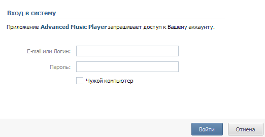
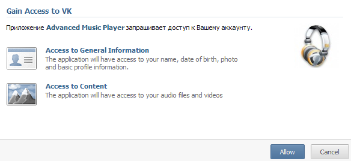
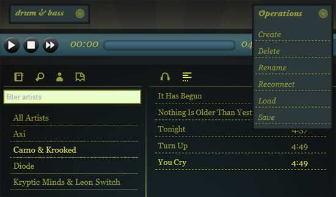
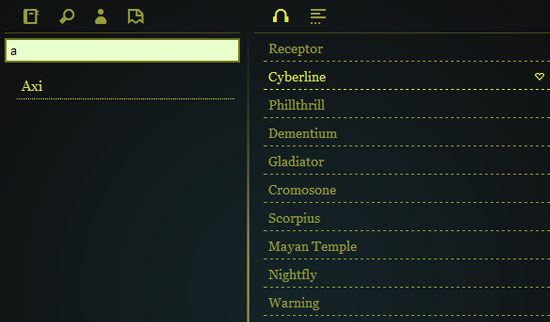

When launching the application, it tries to contact the VK servers for authorization. While waiting for that you will be presented with the waiting screen. If the communication is successful and you weren't logged in before, you will be presented with the login dialog.
Providing correct login details for the VK website (http://vk.com) - you will be qualified as logged in and your authorization details will be saved for the current application so you will not have to authorize again next time your start the application.
For application to work correctly it requires access to audio search features of your account, for that you will have to gain access for application by allowing it to use your accounts music search API.
Starting off, create new playlists using menu on the right, you can later rename or delete playlists using the same menu. Playlist selection is available in the menu on the left.
Use left sidebar buttons to search for an artist, lookup similar artists and get back to the library. You can also filter library items using input box. When desired performer is found, click on that to get list of his tracks.
Clicking on the track starts playing if its found in the VK database, you can also add it to the currently selected playlist by clicking favorite icon on the right next to the track title.